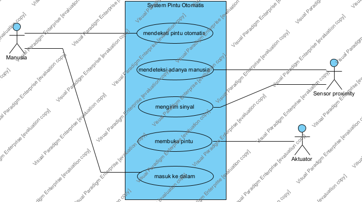

Sistem Pintu Otomatis
Project Link
Page URL
with Name
Use Case Diagram - Use Case Diagram1
link
Jump to:
Please select a model element
System Pintu Otomatis : System
Aktuator : Actor
Manusia : Actor
Sensor proximity : Actor
masuk ke dalam : Use Case
membuka pintu : Use Case
mendekati pintu otomatis : Use Case
mendeteksi adanya manusia : Use Case
mengirim sinyal : Use Case

Model Elements
Name
Description
System Pintu Otomatis : System
Aktuator : Actor
Manusia : Actor
Sensor proximity : Actor
masuk ke dalam : Use Case
membuka pintu : Use Case
mendekati pintu otomatis : Use Case
mendeteksi adanya manusia : Use Case
mengirim sinyal : Use Case
Sistem Pintu Otomatis